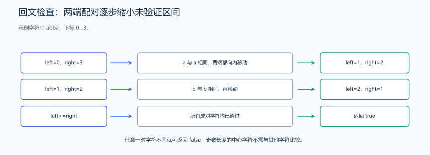
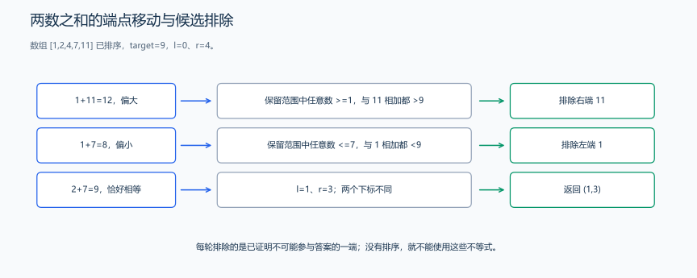
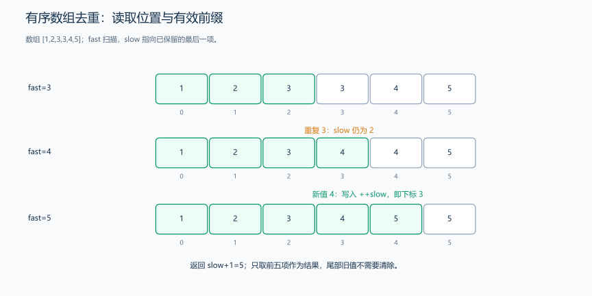
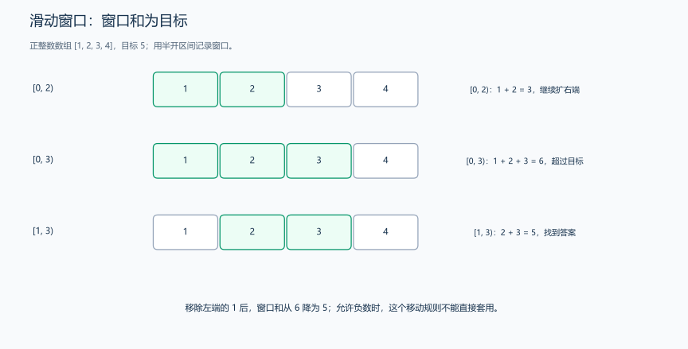
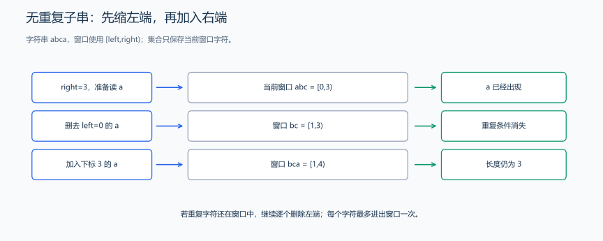

（九） 双指针与滑动窗口（尺取法）
对有序数据或连续区间，不一定要重新枚举每一对端点。先跟踪两个位置怎样移动，证明每次移动保留了哪些可能答案。
双指针是高效遍历与查找序列关系的一种技巧，通过两个下标在同一或不同数组上同时移动，避免重复计算。
注意： 这里的“双指针”通常指两个数组或字符串下标；它们不必是保存内存地址的 C++ 指针变量。
1. 头尾双指针
两个下标分别从序列两端开始，按题目的排除规则向中间移动。
例如，头尾双指针的两个经典应用：
1.1 从两端判断回文字符串
题目原文（自拟）： 给定按单字节字符处理的字符串 s，判断从左到右和从右到左读到的字符是否完全相同。空串和单字符都算回文，返回 bool。大小写、空格和标点都参与比较，不自动忽略。
思路分析： 回文要求每个位置 i 都满足 s[i]==s[n-1-i]。从两端开始检查一对字符，相等后一起向中间移动。已检查的外侧已经满足条件，剩下只需检查内部；一旦有一对不同就可以返回 false。指针相遇时，中央字符与自己相等；交错时所有对应位置已检查完。

已匹配的两端不再检查，未验证区间逐步缩小。
#include <string>
using namespace std;
// 两端字符逐一比较；空串时右下标为 -1，循环直接跳过。
bool isPalindrome(const string &s) {
int left = 0, right = static_cast<int>(s.size()) - 1;
while (left <= right) {
if (s[left] != s[right])
return 0;
left++;
right--;
}
return 1;
}样例与代码解释： abba 先比较两个 a，再比较两个 b，返回 true；abc 第一轮的 a 与 c 不同，返回 false。空串令 right=-1，不进入循环而返回 true；不是先把无符号的 size() 减一再转换，所以没有无符号减法下溢。
复杂度： 每轮比较两端，再向中间移动，最多比较约一半字符，时间 \(O(n)\)，额外空间 \(O(1)\)。例如 racecar 的比较顺序是 r/r、a/a、c/c，剩下的 e 位于正中间。
练习题： 洛谷 P1217 — 回文质数（综合回文构造与素数判断）。
1.2 两数之和：从两端排除候选
题目原文（自拟）： 给定非递减整数数组 arr 和目标和 target，找到两个不同下标 i<j，满足 arr[i]+arr[j]==target。存在时返回任意一组下标，否则返回 (-1,-1)。数组长度可用 int 下标表示，元素为 int，目标为 long long。
思路分析： 初始令 left=0、right=n-1。从数组的有序关系，可以看出两端之和怎样决定下一步移动：
- 和偏小：对当前范围内任意
j<=right，都有arr[left]+arr[j]<=arr[left]+arr[right]<target。当前左端与谁配对都不够，因此排除左端。 - 和偏大：对任意
i>=left，都有arr[i]+arr[right]>=arr[left]+arr[right]>target。当前右端与谁配对都超出，因此排除右端。 - 和相等：直接返回。循环要求
left<right，防止同一位置被使用两次。

图以 [1,2,4,7,11]、目标 9 为例：先排除 11，再排除 1，最后得到下标 (1,3)。每一步排除都依赖排序带来的不等式。
// 数组有序时：和太大缩右端，和太小移左端；left < right 防止复用。
#include <utility>
#include <vector>
using namespace std;
pair<int, int> twoSum(const vector<int> &arr, long long target) {
int left = 0, right = static_cast<int>(arr.size()) - 1;
while (left < right) {
long long sum = 1LL * arr[left] + arr[right];
if (sum == target)
return {left, right};
if (sum > target)
--right;
else
++left;
}
return {-1, -1};
}样例与代码解释： [1,2,4,7]、目标 9 返回 (1,3)，对应 2+7；[3]、目标 6 返回 (-1,-1)，因为不能使用同一个 3 两次。计算和时先转为较宽整数，避免两个 int 相加后才赋值造成溢出。
复杂度分析： 每轮至少移动一个端点，端点总移动次数为 \(O(n)\)，额外空间 \(O(1)\)。若输入未排序，可带着原下标排序，或使用哈希表查互补值，得到另一种查找过程。后面的整数二分章节会给出逐个查互补值的实现。
练习题： 洛谷 P1102 — A-B 数对（变式：求差且统计方案，注意相同值的数量）。
1.3 头尾双指针的移动模板
// 标准头尾双指针模板
int functionName(vector<int>& arr,int target){
int left = 0, right = static_cast<int>(arr.size()) - 1;
while (left <= right) { // 或 left < right，根据具体需求
// 处理逻辑
if (condition) {
// 找到目标
return result;
}
else if (condition1)
left++; // 左指针右移
else
right--; // 右指针左移
}
}练习题： 洛谷 P1102 — A-B 数对。
2. 快慢双指针
两个下标从同一侧开始，同向扫描，分别负责读取和写入；链表判环中则常使用不同步长。
2.1 移除有序数组中的重复元素
题目原文（自拟）： 给定非递减整数数组 nums，在原数组中保留每种值一次，且仍按升序排列。返回有效前缀长度 k，要求前 k 项恰好为去重结果；无须改变 vector 的实际长度，末尾内容可以保留。空数组返回 0。
思路分析： 第一个元素直接保留，令 slow=0。fast 从下标 1 开始读取；若新值等于最后保留值，就跳过；否则先把 slow 加一，再把新值写入该位置。排序保证相同值相邻，只需与最后保留值比较。
循环不变量是：nums[0..slow] 已是扫描过部分的正确去重结果，slow<=fast。写入位置不会超过读取位置，因而不会破坏尚未扫描的后缀。

图以 [1,2,3,3,4,5] 为例：第二个 3 被跳过，随后 4、5 依次写到有效前缀末尾。绿色区域表示结果范围。
#include <vector>
using namespace std;
int removeDuplicates(vector<int> &nums) {
if (nums.empty())
return 0;
int slow = 0; // 慢指针 - 指向当前唯一元素的位置
for (int fast = 1; fast < nums.size(); fast++) {
// 快指针寻找不同的元素
if (nums[fast] != nums[slow]) {
slow++;
nums[slow] = nums[fast];
}
}
return slow + 1; // 返回新长度
}样例与代码解释： 最后 slow=4，返回 5；前五项为 [1,2,3,4,5]。slow 是下标，所以长度需要再加一。若确实要缩短容器，可在返回后执行 nums.resize(k)；若只按题目要求返回长度，则不必这样做。
复杂度： 只扫描一次，时间 \(O(n)\)、额外空间 \(O(1)\)。排序后相同值紧挨在一起，只需和上一个保留值比较，就能识别这一轮是否出现新值。
快慢指针也可用于链表判环：慢指针走一步，快指针走两步；一旦二者进入同一环，相对位置每轮推进一步，最终相遇。此时指针表示节点位置，与本例的数组读写职责不同。参见 链表环检测。
练习题： 洛谷 P1059 — 明明的随机数（先排序，再去重）。
2.2 快慢双指针的读写模板
// 伪代码：把“满足保留条件”换成题目要求的判断。
int slow = 0;
for (int fast = 0; fast < n; fast++) {
if (/* 满足保留条件 */) {
nums[slow] = nums[fast];
slow++;
}
}
// slow 是保留元素数量，也是下一次写入的位置，不是最后一个有效下标练习题： 洛谷 P1059 — 明明的随机数（排序去重练习）。
3. 滑动窗口
滑动窗口是一种高效解决 子区间问题（subarray / substring） 的算法技巧，通过动态维护一个满足条件的区间，避免暴力枚举所有区间带来的重复计算。滑动窗口使用两个边界下标维护连续区间；它与原地去重中的读写下标含义不同。
核心思想：
通过两个指针（通常是 left 与 right）在序列上移动，维护一个“窗口区间” [left, right)。
- 右指针向右移动（扩大窗口） → 加入新元素
- 左指针向右移动（收缩窗口） → 移除旧元素
- 在此过程中实时更新窗口内的信息（如和、长度、字符频率等）
注意： 滑动窗口本质上是一种 动态区间维护算法，但常用快慢指针来维护。
3.1 区间和：扩张右端与移动左端
题目原文（自拟）： 给定正整数数组 arr 和正目标 s，找一个非空连续区间，使区间和恰好为 s。存在时返回半开区间 [left,right)，否则返回 (-1,-1)；空数组无解。数组长度可用 int 表示，整个数组的和不超出 long long 范围。
思路分析： 维护窗口和 sum，初始窗口为空。向右加入一个新数后，若和太大，就不断删去左端；缩小到不再大于目标后，检查是否相等。
为什么这样不会漏解？正数保证加入元素只能增大和，删去左端只能减小和。窗口已经超过目标时，保留当前左端并继续往右只会更大，所以可以排除这个左端；窗口不足目标时，则继续尝试向右扩张。若有负数，这两个单调变化都可能失效，应考虑前缀和与映射等其他方法。

图中加入前三项后 [0,3) 的和为 6，超出目标 5；删除左端 1 后，[1,3) 的和变成 5，对应 2、3。
#include <vector>
#include <utility>
using namespace std;
pair<int, int> findSum(const vector<int> &arr, long long s) {
if (s <= 0)
return {-1, -1}; // 寻找非空区间，数组元素为正数
int left = 0, right = 0;
long long sum = 0;
while (right < arr.size()) {
sum += arr[right++]; // 扩大窗口
while (sum > s && left < right) // 收缩窗口
sum -= arr[left++];
if (sum == s)
return {left, right};
}
return {-1, -1};
}样例与代码解释： [1,2,3,4]、s=5 返回 (1,3)。right++ 出现在加入元素的语句中，因此 right 始终是尾后下标，返回前不再加一。函数把空区间与找不到的情况统一返回无解，找到时则返回包含实际元素的起止位置。
复杂度： 内层收缩循环虽然嵌套在外层中，但左端只向右走，每个元素最多加入、删去各一次，所以总时间 \(O(n)\)，额外空间 \(O(1)\)。
3.2 最长无重复子串
题目原文（自拟）： 给定按单字节字符处理的字符串 s，求不含重复字符的最长连续子串长度。空串返回 0；长度可用 int 表示。大小写视为不同字符。
思路分析： 集合保存当前半开窗口 [left,right) 中的字符。若 s[right] 不在集合中，就加入它并扩大右端；若已经存在，就先删除左端字符、右移左端，再检查同一个右端字符，直到能够合法加入。每次扩大右端后更新最大长度。
移动左端时，先从集合中删除对应字符，再将 left 加一；扩展右端时，把新字符加入集合，再将 right 加一。集合因此始终保存窗口里的字符。对一个固定右端，从左侧逐项删到冲突字符离开，就得到这个右端下尽可能长的不重复窗口。

图以 abca 为例：扫描最后一个 a 时，已有窗口为 abc；先删除左端 a，再加入新 a，得到 bca。字符只有真正进入窗口后才右移 right。
#include <string>
#include <algorithm>
#include <unordered_set>
using namespace std;
// 集合保存窗口中的字符；重复时移除左端，直到可以加入右端字符。
int lengthOfLongestSubstring(string s) {
unordered_set<char> window;
int left = 0, right = 0, res = 0;
while (right < s.size()) {
if (!window.count(s[right])) {
window.insert(s[right]);
right++;
res = max(res, right - left);
} else {
window.erase(s[left]);
left++;
}
}
return res;
}样例与代码解释： abcabcbb 返回 3，bbbbb 返回 1，空串返回 0。res 保存的是历史最大长度，不是最终窗口长度；例如 abcabcbb 最后的窗口很短，但答案仍为 3。
复杂度： 每个字符最多进、出窗口各一次，哈希操作平均常数级时，扫描时间 \(O(n)\)。集合最多保存当前出现的不同字符，空间 \(O(min(n,字符集大小))\)。本函数按值传入字符串，还会产生一份 \(O(n)\) 输入副本，因此整个调用的额外空间为 \(O(n)\)；改为 const string& 可以省去副本。
3.3 滑动窗口的扩张与收缩模板
// 伪代码：add/remove 表示维护窗口状态的操作。
int left = 0, right = 0;
while (right < n) {
// 扩大窗口
window.add(s[right]);
right++;
while (window 不满足条件) {
// 收缩窗口
window.remove(s[left]);
left++;
}
// 在这里更新答案（窗口满足条件时）
}